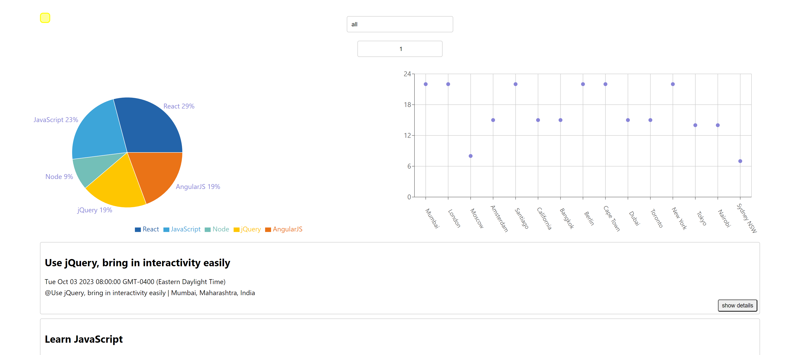

Coding Works :
Meet App

! Check out the hosted App here !This app provides a list of coding events all around the world. The user can use the Search bar to filter the events by city, as well as control the number of events taht will be displayed at one time. Above the event list are two graphs giving the user data on the frequency of events by city, as well as the frequency of events by their subject matter, on their filtered list of events.
Development technologies :
React, React Testing Library, Javascript, AWS Lambda, google OAuth, Jest (Cucumber), Gherkin, Puppeteer, Recharts, and more